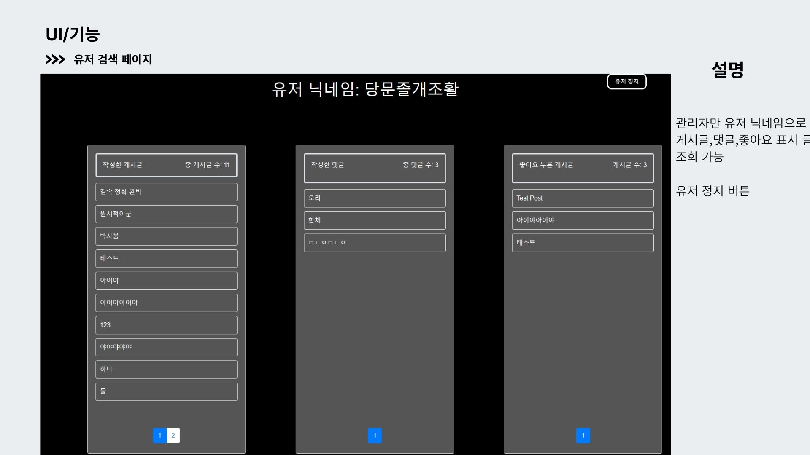
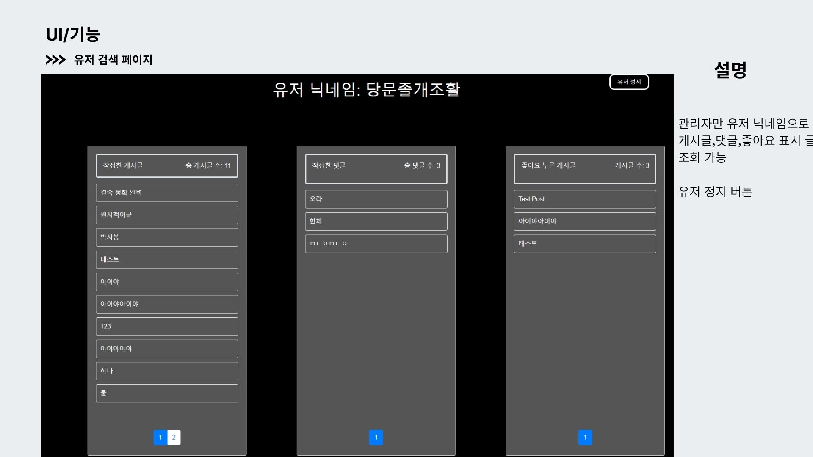

portfolio
이진규
· 010-6865-1972 ·
goter0429@gmail.com
· Java를 기반으로한 웹 프로그램의 개발과 데이터베이스 관리에 대한 기초 기술을 바탕으로 신입 백엔드 웹 개발자로써 기업에 합류하여,
함께 일하며 경험을 쌓는 과정속에 지속적인 학습과 성장을 추구하면서 우수한 인재로 거듭날 기회를 찾고자합니다.
· 채용 여부를 결정하시는 데 참고가 될 저의 이력과 프로그래밍 학습 과정에서 진행한 프로젝트 결과물들을 이 정적 웹 페이지에서
일괄 확인하실 수 있습니다.


 
